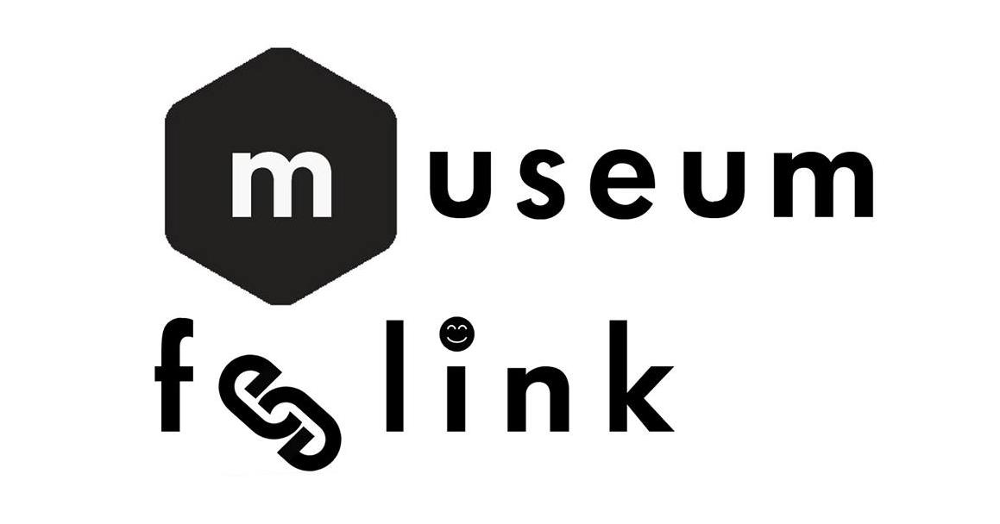

<!DOCTYPE html>
<html>
  <head>
    <meta charset="utf-8">
    <title>Section scroller one-page template</title>
    <meta name="description" content="This one page example has a fixed navbar and full page height sections. Each section is vertically centered on larger screens, and then stack responsively on smaller screens. Scrollspy is used to activate the current menu item. This layout also has a contact form example. Uses animate.css, FontAwesome, Google Fonts (Lato and Bitter) and Bootstrap." />
    <meta name="viewport" content="width=device-width, initial-scale=1.0">
    <meta name="generator" content="Codeply">

    <link rel="stylesheet" href="//maxcdn.bootstrapcdn.com/bootstrap/3.3.4/css/bootstrap.min.css" />
    <link href="//maxcdn.bootstrapcdn.com/font-awesome/4.3.0/css/font-awesome.min.css" rel="stylesheet" />
    <link href="//cdnjs.cloudflare.com/ajax/libs/animate.css/3.1.1/animate.min.css" rel="stylesheet" />

    <link rel="stylesheet" href="css/styles.css" />
  </head>

  <body >
    

<section class="container-fluid" id="section1">
	<div class="row">
		
       <!-- <div class="col-sm-6">
			<a href="regle.html"></a>
        </div>-->
	</div>
	 <a href="index.html">
		<div class="scroll-down bounceInDown animated">
            <span>
                <i class="fa fa-angle-down fa-2x"></i>
            </span>
		</div>
        </a>
</section>


    <!--scripts loaded here-->
    
    <script src="//ajax.googleapis.com/ajax/libs/jquery/1.9.1/jquery.min.js"></script>
    <script src="//maxcdn.bootstrapcdn.com/bootstrap/3.3.4/js/bootstrap.min.js"></script>
    
    <script src="js/scripts.js"></script>
  </body>
</html>